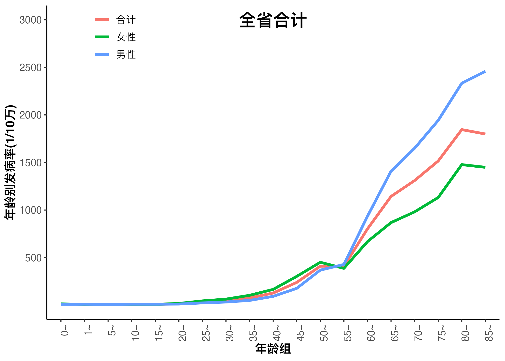

载入程辑包：'dplyr'The following objects are masked from 'package:stats':
filter, lagThe following objects are masked from 'package:base':
intersect, setdiff, setequal, union折线图是由许多的资料点用直线连接形成的统计图表，若看多个资料点之间的连线，会是折线。折线图常用于显示数据在一个连续的时间间隔或者时间跨度上或再或者在一个有序类别上的变化，它的特点是反映数据随时间或有序类别而变化的趋势。
折线图用横轴表示时间或者有序类别，用纵轴表示数值，用点来表示各个数据的位置，用线连接各个数据点。
折线图可以反映数据变化的规律，比如数据是逐渐增高还是降低的、增高或者降低的速度如何？是周期的变化还是一过性的变化，变化周期内的峰值是多少？这些数据的特征都可以通过折线图表达或展示出来。
今天我们要绘制的线图就是要展示恶性肿瘤的发病率随年龄变化的趋势，用来展示恶性肿瘤发病率随着年龄变化的一些特征，如恶性肿瘤的高发年龄段是多少？恶性肿瘤的发病率从哪个年龄段开始快速上升的？出现恶性肿瘤发病率峰值的年龄段是多少？
今天我们主要用来绘图的包还是ggplot2包，用于组合图的R包是cowplot包，用于数据处理的包是dplyr包。
首先，安装这些包
# 安装ggplot2包
install.packages("ggplot2")
# 安装cowplot包
install.packages("cowplot")
# 安装dplyr包
install.packages("dplyr")把这些要用到的R包加载到工作环境中
我们把需要用到的数据读取到向量中，我们的数据以csv的格式存放，我们可以基础包的read.csv函数来读取。
我们再来看看数据结构是什么样的
area sex variable agegrp
1 1 合计 11.48 0
2 1 合计 9.50 1
3 1 合计 8.11 5
4 1 合计 9.78 10
5 1 合计 9.65 15
6 1 合计 14.78 20可以看出读入的数据框里有四个变量，分别为area,sex,variable,agegrp 分别为地区、性别、发病率和年龄组数据，其中area的值为1,2,3分别代表全省合计、城市地区和农村地区，agegrp的值0、1、5、10、15、20、25、30、35、40、45、50、55、60、65、70、75、80、85分别为年龄组范围。
然后，我们把area和agegrp两个变量都转化为因子，并加上标签，标签的值为最终显示在图上的值。
ggplot2包作折线图主要用的是geom_line()函数，我们先来一个示例，先作一个单图，把data数据框里的全省合计数据提取出来制作一个年龄别发病率的折线图。
# 利用dplyr包filter函数提取数据
data%>%filter(area=="全省合计")%>%
ggplot(mapping = aes(x=agegrp))+
# 利用 geom_line函数添加折线图图层
geom_line(mapping=aes(y=variable,group=factor(sex),color=factor(sex)),stat = "identity",size=1.3)+
# 利用 annotate语句添加图中注释
annotate("text", x = 10, y = 3000, label = "全省合计",size=6,fontface="bold")+
# 设置x轴标题
xlab("年龄组")+
# 设置y轴标题
ylab("年龄别发病率(1/10万)")+
# 设置y轴起始刻度和终止刻度，以间隔数值
scale_y_continuous(breaks = c(500,1000,1500, 2000,2500, 3000),limits = c(0,3000))+
# 使用gpplot2经典图样式
theme_classic()+
# 对样式进行个性化调整
theme(
# 把x轴标签调整为90度
axis.text.x = element_text(angle = 90, hjust = 1),
# 设置图例标题为空
legend.title=element_blank(),
# 设置图例的位置在左上角
legend.position = c(0.15,0.9),
# 设置图例的文字大小为10号
legend.text=element_text(size=10),
# 设置图标题位置和文字大小
plot.caption = element_text(hjust=0.5, size=15),
axis.text=element_text(size=10),
# 设置轴标题文字大小和文字加粗
axis.title=element_text(size=12,face="bold")
)->p1Warning: Using `size` aesthetic for lines was deprecated in ggplot2 3.4.0.
ℹ Please use `linewidth` instead.Saving 7 x 5 in image现在我们来看看存入向量p1的图是什么样的吧!
 ## 在gpplot2语句中加入facet_wrap或者facet_grid语句制作组合图
如果我们想分别展示不同地区的发病率随着年龄的变化趋势，那么我们可以把area这个变量放入facet_wrap函数里以按照area这个变量分组作图，并展示出来。
另外，需要注意的是，用了facet_wrap函数就不用加annotate注释语句了，因为facet_wrap会自动加上。
# 这里我们就不用filter函数提取数据了
data%>%
ggplot(mapping = aes(x=agegrp))+
geom_line(mapping=aes(y=variable,group=factor(sex),color=factor(sex)),stat = "identity",size=1.3)+
facet_wrap(~area)+
xlab("年龄组")+
ylab("年龄别发病率(1/10万)")+
scale_y_continuous(breaks = c(500,1000,1500, 2000,2500, 3000),limits = c(0,3000))+
theme_classic()+
theme(axis.text.x = element_text(angle = 90, hjust = 1))+
theme(legend.title=element_blank(),
legend.position = c(0.10,0.85),
legend.text=element_text(size=10),
plot.caption = element_text(hjust=0.5, size=15),
strip.text = element_text(size=14,face="bold.italic"),
strip.background = element_rect(color="white",size=0),
axis.text=element_text(size=10),
axis.title=element_text(size=12,face="bold")
)->p2Warning: The `size` argument of `element_rect()` is deprecated as of ggplot2 3.4.0.
ℹ Please use the `linewidth` argument instead.现在不同地区的年龄别发病率图已经存入向量p2，现在我们p2展示出来，看看是什么样的？
注意：facet_wrap()函数还提供了一个参数就 scales=“fixed” fixed是默认的参数值，意思是所有图共享一个统一的坐标轴刻度，但是还可以选择scales=“free”，这个每个图根据自身值的范围自动选择坐标轴刻度范围。
但是因为我们已经在前面的语句中已经通过scale_y_continuous语句设置了坐标轴刻度，所以加入scales=“free”选项，只会再每个图上再单独显示出来坐标轴，但是刻度范围还是按照scale_y_continuous语句设置的来显示。
我们再来验证一下是不是这样的？
data%>%
ggplot(mapping = aes(x=agegrp))+
geom_line(mapping=aes(y=variable,group=factor(sex),color=factor(sex)),stat = "identity",size=1.3)+
# 根前面的程序块里唯一不同的是加入了scales="free"参数
facet_wrap(~area,scales="free")+
xlab("年龄组")+
ylab("年龄别发病率(1/10万)")+
scale_y_continuous(breaks = c(500,1000,1500, 2000,2500, 3000),limits = c(0,3000))+
theme_classic()+
theme(axis.text.x = element_text(angle = 90, hjust = 1))+
theme(legend.title=element_blank(),
legend.position = c(0.10,0.85),
legend.text=element_text(size=10),
plot.caption = element_text(hjust=0.5, size=15),
strip.text = element_text(size=14,face="bold.italic"),
strip.background = element_rect(color="white",size=0),
axis.text=element_text(size=10),
axis.title=element_text(size=12,face="bold")
)->p3
# 直接显示p3向量
p3
今天我们介绍了折线图的概念，以及如何利用ggplot2包绘制折线图，大家可以根据自己的审美观点修改上面参数和设置，绘制自己的折线图吧。
如果你对本篇文章有何意见或建议的话，请在底部的留言框中留言吧！